플라스틱창호기능사 (2004-07-18 기출문제)
1과목: 건축일반
1. 그림과 같은 재료 구조 표시 기호는?
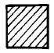
- 목재치장재
- 석재
- 인조석
- 지반
(정답률: 85%)

2. 다음의 평면표시기호 중 쌍여닫이문의 표시기호는?
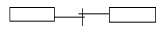
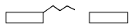
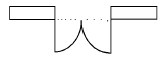
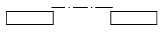
(정답률: 100%)
3. 선의 종류 중 이점쇄선의 용도는?
- 외형선
- 인출선
- 치수선
- 상상선
(정답률: 82%)
4. 기초평면도에 표기하는 사항이 아닌 것은?
- 기초의 종류
- 앵커볼트의 위치
- 마루밑 환기구 위치 및 형상
- 기와의 치수 및 잇기방법
(정답률: 76%)
5. 두 방을 한 방으로 크게 할 때나 칸막이 겸용으로 사용하는 문은?
- 접이문
- 널문
- 양판문
- 자재문
(정답률: 87%)
6. 벽돌쌓기에 있어 줄눈에 관한 설명 중 옳지 않은 것은?
- 벽돌과 벽돌사이의 모르타르 부분을 줄눈이라 한다.
- 수평을 가로줄눈, 수직을 세로줄눈이라 한다.
- 세로줄눈의 위아래가 막힌 것을 막힌줄눈이라 한다.
- 통줄눈은 위에서 오는 하중을 균등하게 밑으로 전달시킬 수 있어 좋다.
(정답률: 80%)
7. 철근콘크리트 구조의 형식에서 라멘(Rahman)구조에 대한 설명으로 옳은 것은?
- 보를 설치하지 않고 실내공간을 넓게 한다.
- 기둥과 보를 서로 연결하여 하중을 부담시킨다.
- 판상의 벽체와 바닥 슬래브를 일체적으로 구성한다.
- 곡면 바닥판을 이용하여 간사이가 큰 구조를 형성한다.
(정답률: 65%)
8. 창문틀의 좌우에 수직으로 세워댄 틀은?
- 밑틀
- 웃틀
- 선틀
- 중간틀
(정답률: 76%)
9. 계단에 대치되는 경사로의 경사도는 얼마가 적당한가?
- 1/8
- 1/7
- 1/6
- 1/5
(정답률: 71%)
10. 철골구조에 대한 설명 중 틀린 것은?
- 철골구조는 재료에 의해 보통형강구조, 경량철골구조, 강관구조, 케이블구조 등으로 나눌 수 있다.
- 고층건물에 적합하고 스팬을 길게 할 수 있다.
- 내화력이 약하고 녹슬 염려가 있어, 피복에 주의를 기울여야 한다.
- 본질적으로 조립구조이므로 접합에 유의할 필요가 없다.
(정답률: 77%)
11. 철근콘크리트 보에서 늑근의 주된 사용 목적은?
- 압축력에 대한 저항
- 인장력에 대한 저항
- 전단력에 대한 저항
- 휨응력에 대한 저항
(정답률: 59%)
12. 목조 벽체에서 외력에 의하여 뼈대가 변형되지 않도록 대각선 방향으로 배치하는 빗재는?
- 처마도리
- 가새
- 층보
- 샛기둥
(정답률: 91%)
13. 보강블록조에서 내력벽으로 둘러싸인 부분의 바닥 면적은 얼마를 넘지 않도록 하여야 하는가?
- 60m2
- 80m2
- 100m2
- 120m2
(정답률: 76%)
14. 다음 중 구조체인 기둥과 보를 부재의 접합에 의해서 축조하는 방법으로, 목구조, 철골구조 등이 해당되는 구조는?
- 가구식구조
- 조적식구조
- 아치구조
- 일체식구조
(정답률: 67%)
15. 난간의 웃머리에 가로대는 가로재로 손스침이라고도 불리우는 것은?
- 난간동자
- 난간두겁
- 챌판
- 엄지기둥
(정답률: 69%)
16. 다음 중 목재창의 표시 방법은?
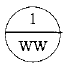
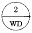
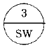
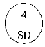
(정답률: 78%)
17. 래티스보에 접합판(Gusset Plate)을 대서 접합한 보는?
- 허니콤보
- 격자보
- 플레이트보
- 트러스보
(정답률: 57%)
18. 블록조에서 테두리보의 설치 이유가 아닌 것은?
- 수직균열을 막기 위하여
- 벽체 한 부분에 하중을 집중시키기 위하여
- 세로철근의 끝을 정착시키기 위하여
- 분산된 벽체를 일체로 연결하기 위하여
(정답률: 71%)
19. 다음 중 창호도에 표기되는 내용이 아닌 것은?
- 개폐방법
- 기초
- 재료
- 마감
(정답률: 78%)
20. 다음 중 건축물의 주요 구조부의 조건과 가장 관계가 먼 것은?
- 각종 하중에 대해 강도와 강성을 가져야 한다.
- 지역의 인구밀도를 고려하여야 한다.
- 내구성을 갖추어야 한다.
- 단열, 방수, 차음 등 차단성능을 확보하여야 한다.
(정답률: 97%)
2과목: 플라스틱개론
21. 재해의 분류 중 천재가 아닌 것은?
- 지진
- 태풍
- 적설
- 화재
(정답률: 91%)
22. 기업이 갖추어야 할 안전관리 조직의 책임자가 아닌 것은?
- 경영자
- 관리 감독자
- 작업자
- 소비자
(정답률: 90%)
23. "재해는 연쇄적으로 발생한다" 는 도미노 이론을 주장한 사람은?
- 에디슨
- 하인리히
- 노벨
- 포오드
(정답률: 96%)
24. 보호구의 종류가 아닌 것은?
- 안전모
- 용접용 헬멧
- 방진 마스크
- 썬그라스
(정답률: 92%)
25. 소음이 심한 환경에 노출시 나타나는 현상이 아닌 것은?
- 혈압이 낮아진다.
- 맥박이 상승한다.
- 주의력이 산만해진다.
- 기억력이 감퇴된다.
(정답률: 89%)
26. 응급구호표지, 들것, 비상구 등의 안내표지판 색깔은?
- 적색
- 노랑색
- 푸른색
- 녹색
(정답률: 99%)
27. 사고 발생 장소에 따른 분류에서 사업장이나 공장, 연구소 등에서 일어나는 화재, 폭발, 파괴, 공업 중독, 근로 상해, 산업공해 등에 해당하는 재해는?
- 산업재해
- 도시화재
- 공장재해
- 교통재해
(정답률: 88%)
28. 재해 원인 분류에서 관리적인 원인이 아닌 것은?
- 기술적 원인
- 불안전한 행동
- 교육적 원인
- 작업 관리상 원인
(정답률: 91%)
29. 화재의 종류가 바르게 연결된 것은?
- A급 화재-일반화재
- B급 화재-전기화재
- C급 화재-금속화재
- D급 화재-유류화재
(정답률: 96%)
30. 다음 재해발생 원인 중 정신적 원인은?
- 경험훈련미숙
- 피로
- 주의력부족
- 작업준비불충분
(정답률: 49%)
31. 안전점검의 주목적으로 가장 적당한 것은?
- 불안전한 상태를 사전에 발견하여 시정조치 한다.
- 기계설비의 기능을 점검하는 데 있다.
- 법적 기준에 적합한지 점검하는 것이다.
- 안전 규칙의 적절성을 점검하는 데 있다.
(정답률: 82%)
32. 안전관리의 조직형태 중에서 경영자의 지휘와 명령이 위에서 아래로 하나의 계통이 되어 잘 전달되며, 소규모 기업에 적합한 방식은?
- 참모식 조직
- 기능식 조직
- 단계식 조직
- 직계식 조직
(정답률: 81%)
33. 작업 개선계획을 작성하기 위해서는 먼저 기본방향을 명확히 하지 않으면 안 된다. 이 기본 방향과 거리가 가장 먼 것은?
- 편리를 위한 개선방향
- 생산성 향상 방향
- 쾌적한 작업환경 조성방향
- 재해사고의 감소방향
(정답률: 86%)
34. 작업자가 바닥에 미끄러지면서 상자에 머리를 부딪쳐 상처를 입었다. 이때 기인물은?
- 바닥
- 상자
- 머리
- 바닥과 상자
(정답률: 91%)
35. 안전모의 성능기준으로 가장 거리가 먼 것은?
- 외관
- 내충격성
- 내열성
- 안전성
(정답률: 91%)
36. 다음 중 플라스틱창의 가공기중 프로파일을 용융시켜 접합하는 기계는?
- 절단기
- 개공기
- 사상기
- 용접기
(정답률: 89%)
37. 다음은 플라스틱에 대한 설명이다. 틀린 것은?
- 플라스틱은 가소성이라는 말에서 유래된 것이다.
- 플라스틱이란 최종상태에서 액체상의 고분자 물질인 유기화합물을 말한다.
- 당초에 천연수지의 대용을 목표로 했기 때문에 합성수지라는 말을 만든 것이다.
- 플라스틱은 뛰어난 방수성과 비오염성 등이 있다.
(정답률: 66%)
38. 다음 플라스틱 재료 중 가장 무거운 것은?
- 플루오르 수지
- 폴리에틸렌 수지
- 폴리프로필렌 수지
- 염화비닐 수지
(정답률: 72%)
39. 다음 창호기호 중 플라스틱 창을 나타내는 것은?
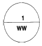
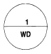
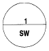
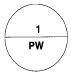
(정답률: 90%)
40. 열경화성 수지의 성형가공법중 금속, 유리 등으로 만들어진 틀안에 액상수지를 주입하여 열 또는 촉매로 경화시키는 방법은?
- 압축성형법(compression molding)
- 주조성형법(casting molding)
- 진공성형법(vacuum molding)
- 취입성형법(blow molding)
(정답률: 55%)
3과목: 작업안전
41. 멜라민 수지에 대한 설명으로 옳지 않은 것은?
- 내용제성이 떨어진다.
- 내수성이 뛰어나다.
- 내열성이 우수하다.
- 무색투명하여 착색이 자유롭다.
(정답률: 69%)
42. 폴리에틸렌 수지 유화액의 용도로서 옳은 것은?
- 메탈라스
- 도료
- 석면
- AE제
(정답률: 78%)
43. FRP 욕조에 대한 설명중 틀린 것은?
- 내약품성, 방수성이 우수하다.
- 외관이 미려하다.
- 감촉은 좋지만 보온성이 나쁘다.
- 가볍고 시공이 용이하다.
(정답률: 78%)
44. 플라스틱창호의 부재와 부재의 용접부분을 마무리하는 장비는?
- 사상기
- 성형기
- 개공기
- 커터기
(정답률: 83%)
45. 폴리스틸렌 타일에 관한 설명중 틀린 것은?
- 성형원료를 사출성형하여 만든다.
- 점토타일보다 치수가 정확하다.
- 바탕에 접착이 잘 되는 장점이 있다.
- 신을 신고 보행하는 마루에 적당하다.
(정답률: 84%)
46. 다음 중 단열성, 방음성, 기밀성 등이 우수한 창호 자재로 선택되어 유럽 선진국에서 널리 사용되고 있는 창호의 재료는 무엇인가?
- 목재
- 철재
- 알루미늄
- 플라스틱
(정답률: 94%)
47. 플라스틱의 일반적인 용도로 적합하지 않은 것은?
- 접착제
- 방수제
- 구조재
- 단열재
(정답률: 72%)
48. 여닫이문의 손잡이 높이는 바닥에서 어느 정도 높이에 있는 것을 표준으로 하는가?
- 60cm
- 90cm
- 120cm
- 150cm
(정답률: 91%)
49. 플라스틱의 원료중 에틸렌과 프로필렌은 어느 계열에서 얻는가?
- 석탄계
- 석유계
- 목재계
- 석재계
(정답률: 84%)
50. 다음중 압축성형에서 주로 사용하는 수지의 종류가 아닌 것은?
- 페놀수지
- 멜라민수지
- 아미노수지
- 염화비닐수지
(정답률: 61%)
51. 에폭시 수지에 대한 설명으로 틀린 것은?
- 접착제나 도료로 널리 사용된다.
- 사용 한계 온도는 50℃ 이하이다.
- 열경화성 수지이다.
- 도막의 밀착성이 매우 좋다.
(정답률: 74%)
52. 합성수지 창호 설치시 수평, 수직을 정확히 하기 위하여 고정철물을 설치하는데 틀재 길이가 1m이상일 경우에는 얼마의 간격마다 1개씩 추가로 부착하는가?
- 10cm
- 30cm
- 50cm
- 70cm
(정답률: 84%)
53. 합성수지 제품 중 강도가 가장 크며 공장, 체육관 등의 천창용 재료로 가장 적당한 것은?
- PVC
- FRP
- 필름
- 레저
(정답률: 92%)
54. 폴리에스테르 수지에 대한 내용에 속하지 않는 것은?
- 천연 수지로 변성하여 얻은 것이다.
- 가요성이 우수하다.
- 내알칼리성이 우수하다.
- 내후성, 밀착성이 우수하다.
(정답률: 59%)
55. 폴리아미드 수지의 내용으로 옳지 않은 것은?
- 내화학 약품성이 우수하다.
- 내마멸성이 높다.
- 내마멸용 성형품 등에 쓰인다.
- 항공기의 방풍유리에 사용된다.
(정답률: 80%)
56. 열경화성 수지에서 압축 성형법의 내용으로 옳지 않은 것은?
- 일반적인 성형법
- 분말의 성형재료를 가열하여 제작
- 가열온도: 140∼180℃
- 수압: 50∼100㎏/cm2
(정답률: 62%)
57. 울거미를 짜고 중간살을 30cm 이내의 간격으로 배치하여 양면에 합판을 붙인 문은?
- 합판문
- 널도듬문
- 플러시문
- 비늘살문
(정답률: 78%)
58. 내열성이 우수하고, -80℃∼250℃까지의 광범위한 온도에서 안정하며, 전기절연성, 내수성이 좋아 공업용 페인트나 방수용 재료로 가장 많이 사용하는 합성수지는?
- 페놀 수지
- 요소 수지
- 에폭시 수지
- 실리콘 수지
(정답률: 75%)
59. 다음 그림은 무엇의 평면기호인가?
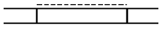
- 셔터창
- 망사창
- 미서기창
- 여닫이창
(정답률: 80%)
60. 다음 중 합성고무의 종류에 속하는 것은?
- 라텍스
- 부나에스
- 생고무
- 가황고무
(정답률: 43%)